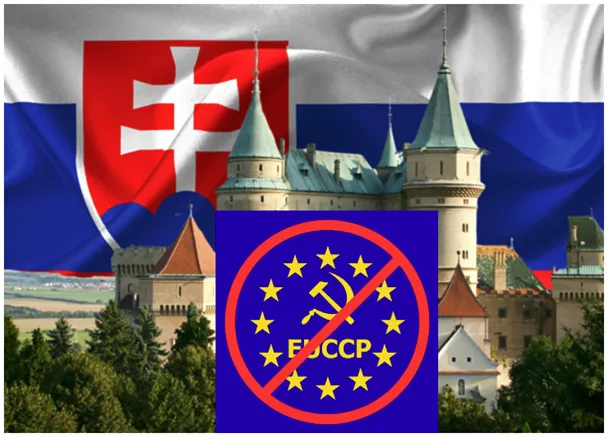
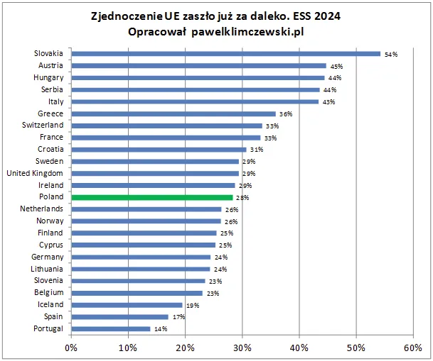

Szmer nadchodzącej lawiny po słowackiej stronie wierchów.
Na Słowacji mamy kolejny krok do normalności. Znowelizowano konstytucję o zapisy przyznające parlamentowi pierwszeństwo przed Unią Europejską w sprawach kulturowych i tożsamości narodowej. Poniżej dokładne badanie robione przez Londyn w celach diagnostycznych w całej Europie, nie jest to szybki sondaż tylko duże badanie socjologiczne w reżimie akademickim. Jak widzicie Słowacja jest bliska, ale jeszcze nie gotowa na referendum w sprawie wyjścia z Unii. Pytania w ankiecie są tak sformułowane, aby ludzie odpowiadali jak najszczerzej, dlatego nie pyta się wprost o wyjście, tylko o ocenę relacji państwa z UE.

Na tej liście są kraje spoza UE, w których w badaniu pyta się identycznie (np. Szwajcaria), bo tamtejszych mieszkańców sprawy UE dotyczą poprzez umowy stowarzyszeniowe, Schengen, itp.
W kolejce Austria i Węgry, nieco niżej Włosi ostatnio bardzo nerwowi. Polska w połowie stawki z 28% sceptyków w 2024. Dziś jest to około 38%. Prawda jest taka, że wystarczy tylko w mediach więcej treści obnażających destrukcyjne działanie UE na nasze życie i proces potoczy się lawinowo. Referendum na Słowacji dałoby całej Europie ostrego kopa.
Paweł Klimczewski